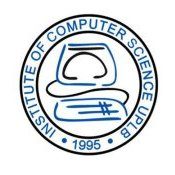

<div id="home-container" class="container" role="main">
  <div class="row">
    <div class="welcome col-md-3 text-center">
      
      <h1>Ayo Ayco</h1>
      <p>
        <span class="glyphicon glyphicon-ok initialism"></span> Kung Fu! <span class="glyphicon glyphicon-ok initialism"></span> Parkour! <span class="glyphicon glyphicon-ok initialism"></span> Dancing!<br />
        I don't know any of those.<br />
        But I'm fond of Apps built for the Web!
      </p>
      <div id="home-btns" class="text-center">
        <div>
          <h3 data-toggle="tooltip" data-placement="top" title='Places in the Web where you can connect with me.'>Connect with me...</h3>
          <p>
          <a href="https://twitter.com/theAbsorbingMan" target="_blank" class="btn btn-info" role="button"><span class="badge"><i class="fa fa-twitter"></i></span> Twitter</a>
          <a href="https://github.com/ayoayco" target="_blank" class="btn btn-success" role="button"><span class="badge"><i class="fa fa-github-alt"></i></span> Github</a>
          </p>
        </div>
        <div>
          <h3 data-toggle="tooltip" data-placement="top" title='Events where I was resource speaker.'>Speaking Engagements</h3>
          
          <p>
              ICS Week 2017<br>
              Web and GIS for Disaster Risk Reduction and Management<br>
              Feb. 16, 2017<br>
              ICS Lecture Hall 3, UPLB, Los Ba&ntilde;os<br>
          </p>
          
          <p>
              Free and Open Source<br>
              Software for Geospatial 2015<br>
              Web and Framework<br>
              Sep. 17, 2015<br>
              The K Seoul Hotel, Seoul, Korea<br>
          </p>
          
          <p>
            Asian Conference on Remote<br>
            Sensing 2015<br>
            WebGIS & Digital Earth<br>
            Oct. 22, 2015<br>
            Crowne Plaza Manila Galleria, Oritigas<br>
          </p>
          
          <p>
            DevCon Summit 2015<br>
            Web Development Special Track<br>
            Nov. 14, 2015<br>
            SMX Convention Center,<br>
            SM Mall of Asia<br>
          </p>
        </div>
      </div>
    </div>

    <div class="welcome col-md-9">
        <div class="row">
          <div id="life-moments-intro" class="col-md-6 col-md-offset-3 text-center">
            <h2><i class="fa fa-leaf"></i> Experience and Projects</h2>
            <p>
              Achievements unlocked!
            </p>
            <!--?php if(isset($_SESSION['okay'])) echo '<a href="?id=add" class="btn btn-primary">Add a Project</a>'; ?-->
          </div>
        </div>
        <div class="timeline animated"></div>
        <div style="height: 30px;">
        </div>
      <script src="js/timeline.js"></script>
    </div>
  </div>
</div>